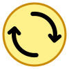
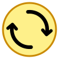
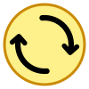
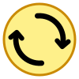
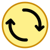

[이전] 1단계 돌출 (2.0px)
화살촉 팁이 살짝 나온 수준

크기조절 핸들
화살촉 전체가 선 끝에 당당히 뻗음
이전 2.0px 돌출에서 한 단계 더(3.5px ~ 5.0px) 선분 끝 바깥으로 전진 배치하여, 화살촉의 꼭짓점뿐만 아니라 꺾임 날개까지 원호 몸통 끝에서 시원하게 돋보이도록 한 샘플들입니다.

4.0px 돌출 (2배 전진)
화살촉 꼭짓점이 확실히 뻗어나와
크기조절 핸들과 딱 맞는 실루엣

3.5px 돌출
과하지 않고 절제된
기분 좋은 1단계 추가 전진

-6도 회전 + 4.0px 돌출
양 날개 대칭 밸런스 최적화
+ 확실한 선 끝 돌출감

몸통 6.8px + 4.0px 돌출
두꺼운 원호 몸통과 어우러져
묵직하고 선명한 화살표

5.0px 강한 돌출
화살촉이 원호 끝에서 완전히
독립적으로 시원하게 뻗어 나옴
Q2 (4.0px 추가 돌출) + 크기조절 : 화살촉이 원호 끝에서 확실하게 전진하여 크기조절 화살표의 뻗음감과 완벽하게 일치함
Q3 (-6도 튜닝 + 4.0px 돌출) + 크기조절 : 대칭 각도와 돌출감의 밸런스가 매우 뛰어남